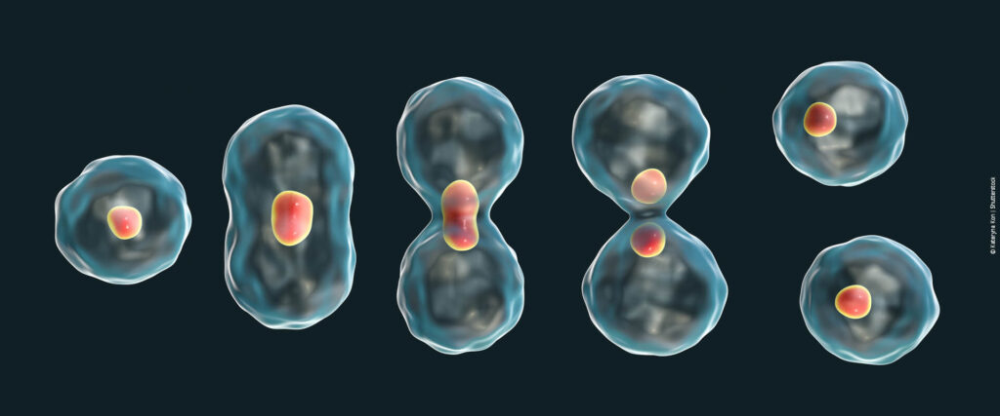
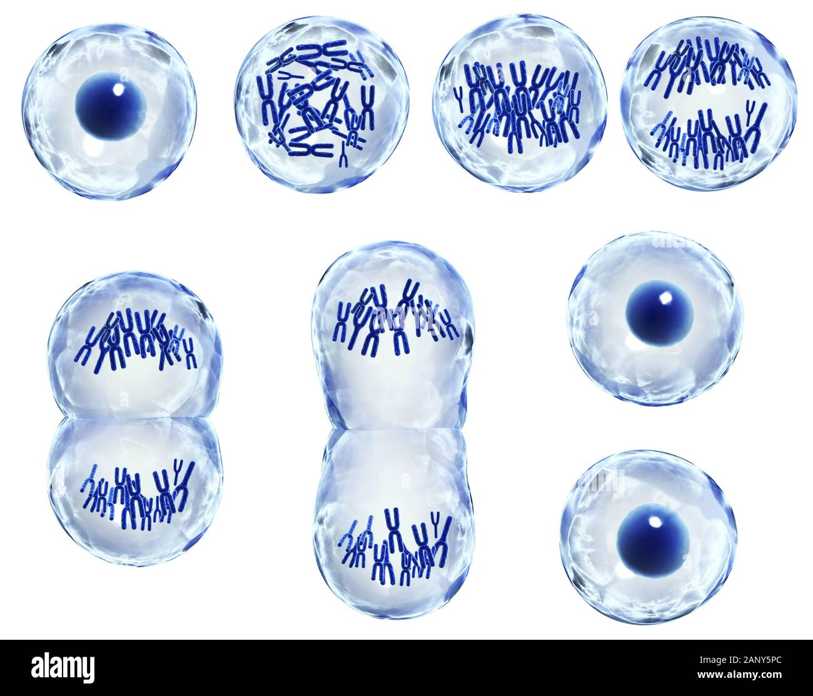

O que é?

A divisão celular é o processo pelo qual uma célula-mãe origina células-filhas.
Através deste processo as células unicelulares se reproduzem e as multicelulares se multiplicam.
A frequência de divisões celulares varia com o tipo e estado fisiológico de cada célula.
No organismo humano, por exemplo, algumas células estão em constante multiplicação. Um exemplo são as células da epiderme e da medula óssea, que se multiplicam para repor as células que morrem.
Entretanto, alguns tipos de células mais especializadas como os neurônios, hemácias e células musculares, nunca se dividem.

Ciclo Celular
É o período que se inicia com a origem da célula, a partir de uma divisão celular e termina quando esta se divide em duas células-filhas.
O ciclo celular é dividido em duas etapas: a interfase e a divisão celular.
Nos eucariontes existem dois tipos de divisão celular: a mitose e a meiose.